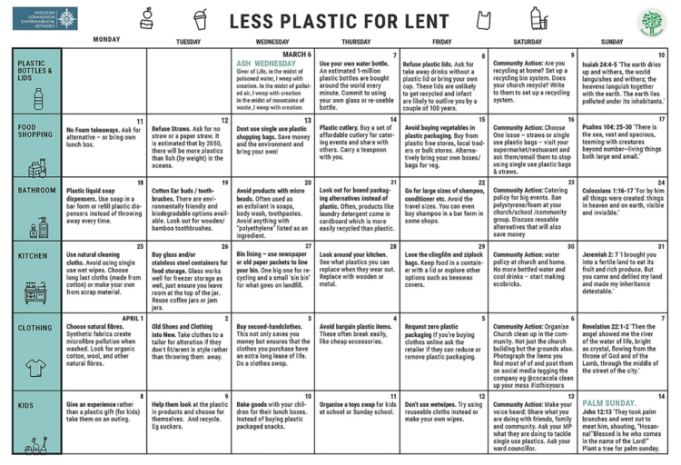

Welcome to Thirsty Thursdays around The Table.
We gather here because we are all thirsty, and we’d like to know the best sources to quench our thirst. Our thirst is for love, belonging, nourishment and meaningful action.
The purpose of this little vlog/blog combo is to connect each of us to the practices, habits and flow that will best quench our thirst.
Every week when we gather in person around The Table, in a community we like to think of as a studio of love, we help to Set The Table for each other through a reminder of ground-rules that govern our practice of love.
We remind ourselves that:
It’s possible to leave the circle with whatever it was that we needed when we arrived.
Knowing the seeds planted here can keep growing to nourish our hunger and quench our thirst in the days ahead.
So, when we gather for Thirsty Thursdays, the point is to water those seeds, so that our hunger & thirst can be quenched every day.
We’ve begun to explore another layer of our current series this month — we’re diving deep into what has been called The Greatest Commandment - a summary of all the important stuff in relationship to God.
Last month we explored how it is we are called to love our neighbors.
This month, we are asking ourselves how it is we can love ourselves.
‘Listen, Israel: The Lord your God is one; so love the
Lord God with all your passion and prayer and
intelligence and energy.’
And here is the second: ‘Love others as well as you
love yourself.’
There is no other commandment that ranks with these.”
— Jesus (Mark 12:29-31, The Message)
Loving ourselves is inherent to loving others and loving God.
This deep dive into loving ourselves also happens to coincide with the practice of Ash Wednesday, which is the invitation to a season of realignment and deepening connection to God...
This month, you are invited to come to terms with not only our limitations, but the miraculous potential of that which we uncover...
Lent is an invitation to 40 days of intentionality, reconnection, realignment and returning to what is most true about us: we are loved, and love can live like it.
Ash Wednesday is an invitation to mindfulness.
To a deep return to the truth that we are beloved by God.
An invitation to be in touch with our mortality because we only have one wild & precious life to live on planet earth — and that means we are limited.
Ash Wednesday is an invitation to a season of practice: letting go of what cannot and will not serve us, and adding in what will indeed help us connect to our rooted core of love.
If you are thirsty for love, belonging, nourishment and meaningful action, begin here friends:
From Stardust you have come, and to Stardust you shall return.
For your Nourishment:
So here’s what I want you to do, God helping you:
Take your everyday, ordinary life—your sleeping,
eating, going-to-work, and walking-around life—and
place it before God as an offering. Embracing what
God does for you is the best thing you can do […]
Don’t become so well-adjusted to your culture that you
fit into it without even thinking. Instead, fix your
attention on God. You’ll be changed from the inside
out. Readily recognize what God wants from you, and
quickly respond to it. Unlike the culture around you,
always dragging you down to its level of immaturity,
God brings the best out of you, develops well-formed maturity
in you.”
— Romans 12:1-2 (The Message)
Fast from hurting words and say kind words.
Fast from sadness and be filled with gratitude.
Fast from anger and be filled with patience.
Fast from pessimism and be filled with hope.
Fast from worries and trust in God.
Fast from complaints and contemplate simplicity.
Fast from pressures and be prayerful.
Fast from bitterness and fill your heart with joy.
Fast from selfishness and be compassionate to others.
Fast from grudges and be reconciled.
Fast from words and be silent so you can listen.”
— Pope Frances
Resources
Thirsty Thursday’s Vlog
The Sacred Enneagram by Chris Heuertz
Guided Prayer App
Father Richard Rohr’s Daily Meditations
How to eliminate what isn't serving and adding what can serve how to love yourself, others, earth & God best:
{kind=link}
Questions for Reflection
Do you have a sense of what sorts of things (wounds, habits, patterns, beliefs) keep you from honestly seeing yourself for who you really are?
This week, how do you want to honor both the limitations of your life and the miraculous potential of your life?
Practices for Lent:
We’re called to Love God with all of our passion and prayer and intelligence and energy.
What is not serving you this month?
What is getting in the way of your alignment with love?
What habits can you eliminate?
What practices can you add?